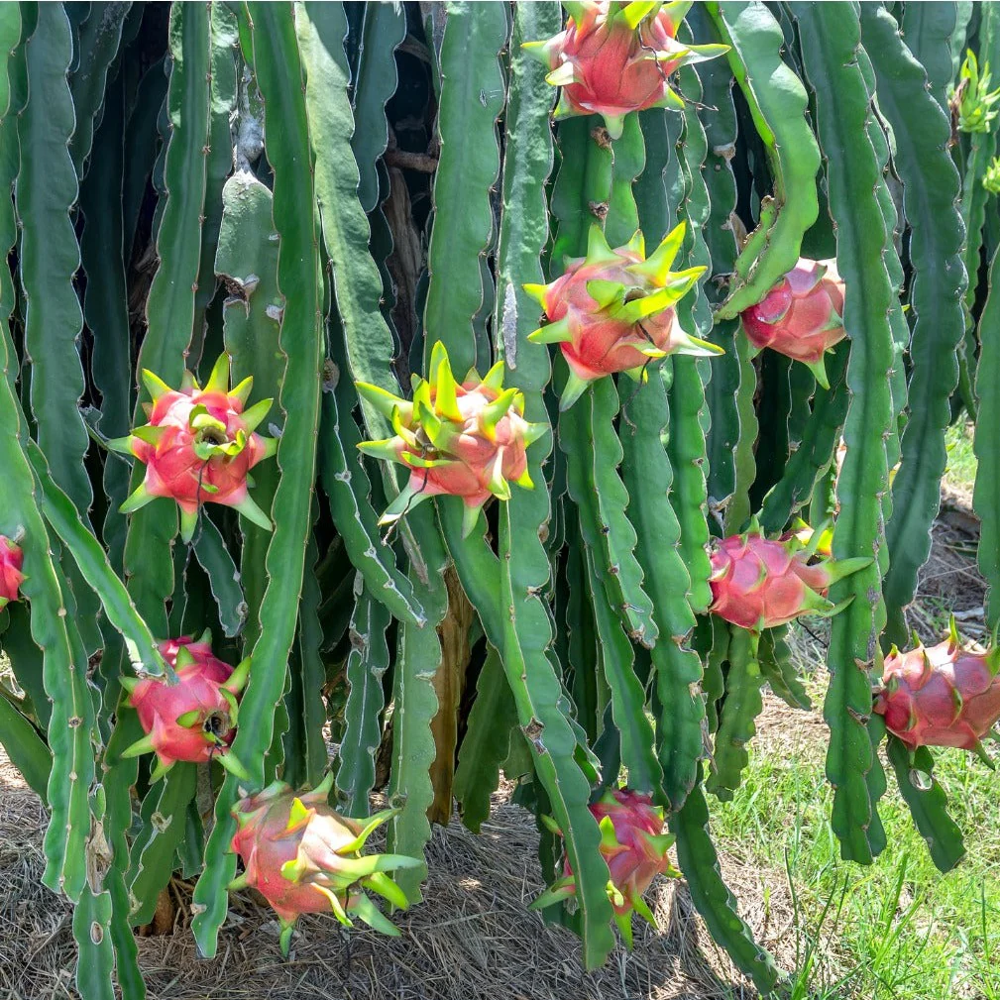
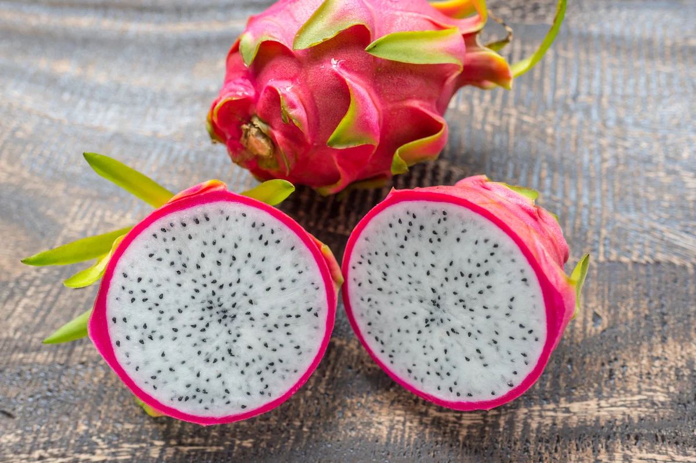

meu primeiro projeto
Pesquisadora PIBIC
um trabalho que cuida de uma cactasea (Pitaya), pesquisando como uma planta original da Àsia se desenvolve no agreste de pernambuco.
escola · criatividade
✳ bem-vindos ao meu espaço
Sou estudante de Agropecuária e formada em Agroindústria. Com conhecimento na área análise físico-química, onde fiz estagio com o fruto pitaya.
✦ aprendendo, criando e construindo meu caminho.
01 / um pouquinho sobre mim
oi!me chamo Maria Elizabete, estudante do curso técnico em Agropecuária. Estagiaria em uma avicultura em sanharó, e fui pesquisadora da PIBIC.
este é meu primeiro portfólio, um cantinho que vai crescer comigo a cada nova experiência. por enquanto, estou explorando possibilidades e descobrindo o que mais gosto de fazer!
02 / o que ando criando
todo projeto começa com uma ideia. estes são alguns dos meus primeiros passos.

meu primeiro projeto
um trabalho que cuida de uma cactasea (Pitaya), pesquisando como uma planta original da Àsia se desenvolve no agreste de pernambuco.

meu primeiro estagio
Análisando o PH, acidez e brix da polpa de Pitaya Branca (Hylocereus undatus).
03 / minha caixinha de ferramentas
ninguém precisa saber tudo para começar. estas são algumas das coisas que estou explorando!
04 / vamos nos conectar?
quer acompanhar minha jornada ou conhecer meus projetos? dá uma olhadinha nos meus links!